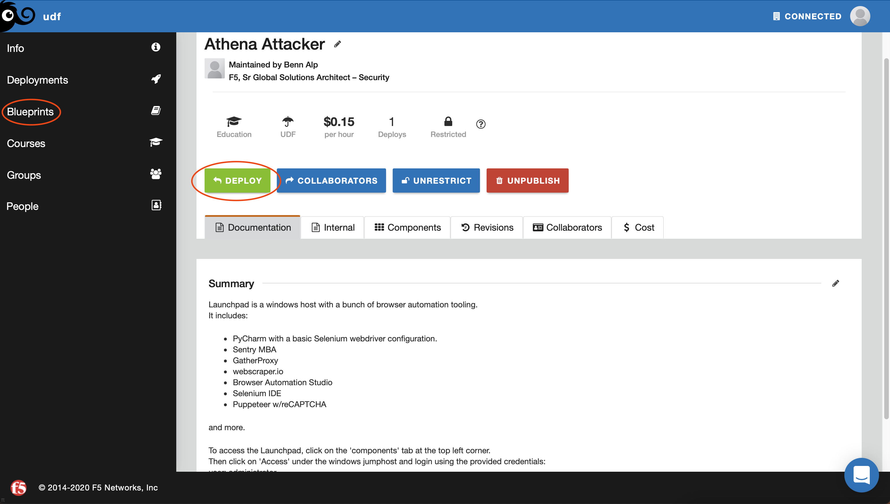
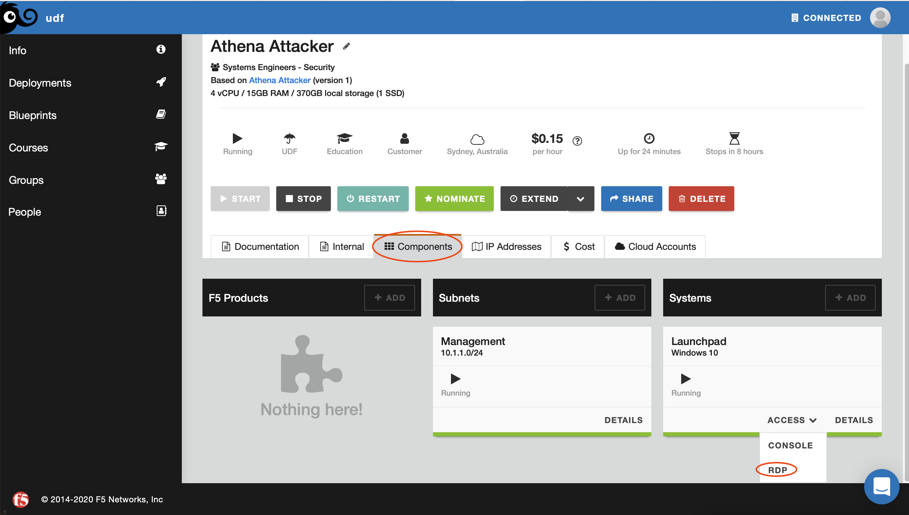

Lab 2 - Part 1 : Logging into the Unified Demo Framework¶
In this exercise we will be suing the “Automation” unified demo framework blueprint - This blueprint provides a Windows image with many tools and frameworks often used by advesaries to exploit attacks leveraging automation.
- Tools include:
PyCharm with a basic Selenium webdriver configuration.
Sentry MBA
GatherProxy
webscraper.io
Selenium IDE
Puppeteer w/reCAPTCHA
Lab 2 - Exercise 1: Deploy, start and log into the UDF blueprint¶
Login to UDF https://udf.f5.com using your employee or partner credentials (Speak to your account manager or F5 contact for access)
Navigate to the blueprint and find the “Athena Attacker blueprint” (https://udf.f5.com/b/c069bba3-17fd-4466-843e-f9a90c5255a4#documentation)

Click Deploy
Once the UDF blueprint has deployed - Start the deployment

Log into the “Launchpad” system using deployment using RDP - The credentials are available in the udf blueprint documentation
